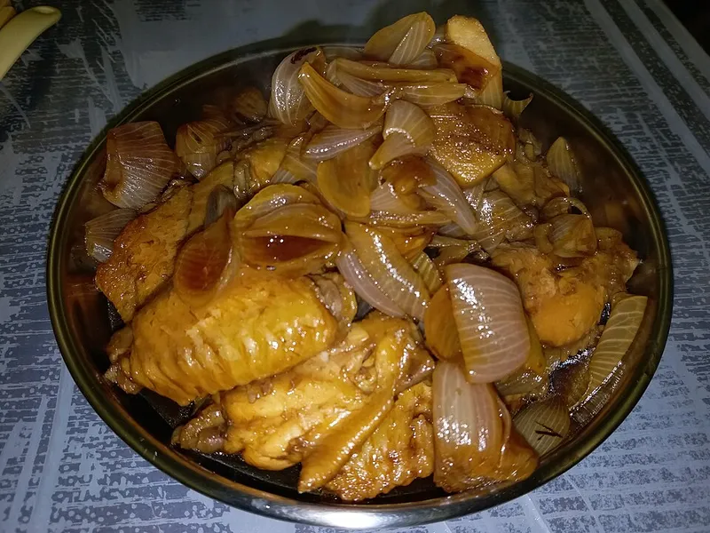

Main主菜 · Chinese home-style家常
Cola Chicken Wings可乐鸡翅
Brown the wings first, then simmer them in cola and soy sauce until the glaze turns sticky and glossy. A big tray of wings from Costco, portioned and frozen, makes this an easy weeknight dish.把鸡翅煎到金黄，再用可乐加酱油焖到收汁，成色油亮、甜咸适口。Costco 的鸡翅整盒买最划算，分装冷冻随时能做。

Ingredients食材
- Chicken wings鸡翅 900 g · about 12 wings (thaw first if frozen)约 12 个翅中/翅根（可用冷冻翅，先解冻）
- Cola可乐 330 g · 1 can (355 mL)1 罐（355 mL） use regular cola, not diet用普通可乐，不要无糖
- Soy sauce生抽 36 g · 2 tbsp (30 mL)2 汤匙（30 mL）
- Dark soy sauce老抽 9 g · 1/2 tbsp (8 mL), for colour1/2 汤匙（8 mL），上色
- Shaoxing wine料酒(绍兴) 30 g · 2 tbsp (30 mL)2 汤匙（30 mL）
- Ginger姜 15 g · 5 slices5 片
- Canola oil菜籽油 14 g · 1 tbsp (15 mL)1 汤匙（15 mL）
- Green onions大葱/小葱 20 g · 2 stalks, in pieces2 根，切段
Weights are as bought, before trimming or peeling. Costco pack sizes and availability vary; see each ingredient page.重量为买回来的原重（去皮去骨之前）。Costco 规格与有无随时变化，点食材名看详情。
Method做法
- Rinse the wings, pat them very dry, and cut two slashes into each side.鸡翅冲洗干净，用厨房纸擦干，在两面各划两刀。
- Put the wings in a pot of cold water with 2 slices of ginger and 1 tbsp wine, and turn on the heat.冷水下锅放入鸡翅和 2 片姜、1 汤匙料酒，开火。
- Skim the foam once it boils, cook 2 minutes, then drain.水开后撇去浮沫，煮 2 分钟，捞出沥干。
- Heat the oil in a wide pan and lay the wings in skin side down.平底锅放油烧热，鸡翅皮朝下放入。
- Fry over medium heat for 3 minutes until golden, flip, and fry 2 minutes more.中火煎 3 分钟到金黄，翻面再煎 2 分钟。
- Add the remaining ginger and the green onion and stir until fragrant, about 30 seconds.放入剩下的姜片和葱段，煎出香味，约 30 秒。
- Add the other tablespoon of wine, the soy sauce and the dark soy sauce.倒入料酒 1 汤匙、生抽和老抽。
- Pour in the cola so that it comes about halfway up the wings.倒入可乐，没过鸡翅的一半。
- Bring to a boil, turn to medium-low, cover and simmer 12 minutes.大火烧开后转中小火，盖盖焖 12 分钟。
- Uncover, turn the heat to high and cook down for 5-6 minutes, turning the wings often, until the sauce is thick and glazes them.揭盖，大火收汁 5–6 分钟，期间不断翻动，汁变浓稠裹住鸡翅即可。
Keys to success成功要点
- Blanching before frying removes scum and gaminess; dry the wings well so the oil does not spatter.鸡翅先焯水再煎，腥味和浮沫都少；一定要擦干，下锅才不溅油。
- Use regular cola: its sugar turns into the glaze; diet cola will not coat.用普通含糖可乐，糖才能熬成亮亮的糖浆；无糖可乐不会挂汁。
- Keep the heat high but keep turning while reducing; the last minute is when it burns.收汁阶段火要大、翻动要勤，最后一分钟最容易煳。
- The cola is already sweet; get the saltiness from soy sauce and add no sugar.可乐本身有甜味，酱油放够咸度，不要再加糖。
Common problems常见失败与补救
- The sauce will not thicken汤汁收不浓
Go higher on the heat with the lid off; if the pan is too wide the sauce spreads thin, so switch to a smaller pan.加大火力、揭开盖继续收；如果锅太大，汁摊得太薄，改小一点的锅。 - Too sweet or cloying太甜或发腻
Add 1 tsp rice vinegar or a few drops of lemon just before serving to cut the sweetness.起锅前加 1 茶匙米醋或几滴柠檬汁，酸味会把甜味压下去。 - The skin sticks and tears鸡翅皮粘锅、破皮
Heat the pan before the oil, start skin side down on dry wings, and flip only when they release on their own.锅要先烧热再放油，鸡翅擦干后皮朝下，煎到自己能松动再翻面。
Watch it done视频参考
Titled as the home-style method for cola wings; about four minutes with English subtitles and close to two million views.标题就是「可乐鸡翅」的家常做法，约 4 分钟，附英文字幕，近 200 万次观看。
Cola chicken wings explained in English in under three minutes, good for a quick look at the whole flow.英文讲解的可乐鸡翅，不到三分钟看完，适合想快速看一遍流程的人。
Videos load only when you tap them (youtube-nocookie). Creators are credited; we do not host their videos.点了才加载视频（youtube-nocookie）。署名原作者，本站不托管视频。
Nutrition营养
| Energy热量 | 311 kcal |
| Protein蛋白质 | 22.4 g |
| Fat脂肪 | 19.6 g |
| of which saturated其中饱和脂肪 | 5.2 g |
| Carbohydrate碳水化合物 | 10.7 g |
| Fibre膳食纤维 | 0.3 g |
| Sodium钠 | 771 mg |
High sodium钠偏高 Sodium tiers: under 345 mg lower, 345-689 mg moderate, 690 mg and above high (this site's tiers; 15% of the 2,300 mg daily reference = 345 mg).钠分档：低于 345 mg 较低，345–689 mg 中等，690 mg 及以上偏高（本站分档；345 mg ＝ 每日参考 2300 mg 的 15%）。
Computed from the Canadian Nutrient File (Health Canada) with the weights above; oil and sauces are counted in full. Real dishes differ.按加拿大营养素数据库和上面的重量计算；油和酱汁按全量计入，实际会略低。
Good to know适合 / 需注意
- About 311 kcal with 22.4 g protein per serving; a reference when you watch total energy.每份约 311 千卡且蛋白质 22.4 g，需要控制总热量时可作参考。
- About 771 mg sodium per serving (about 34% of the 2,300 mg daily reference), on the high side; use less soy sauce or salt, and pair with unsalted sides.每份钠约 771 mg（约占每日参考 2300 mg 的 34%），偏高；少放酱油或盐，或搭配无盐主食与蔬菜。
- Contains allergens: Soy, Wheat / gluten.含过敏原：大豆、小麦/麸质。
Skin-on wings and cola mean more fat and sugar, so this suits an occasional treat; serve with plenty of vegetables and rice.带皮鸡翅脂肪和饱和脂肪偏多，可乐带来明显的糖，适合偶尔做的聚会菜；配大量蔬菜和米饭更均衡。